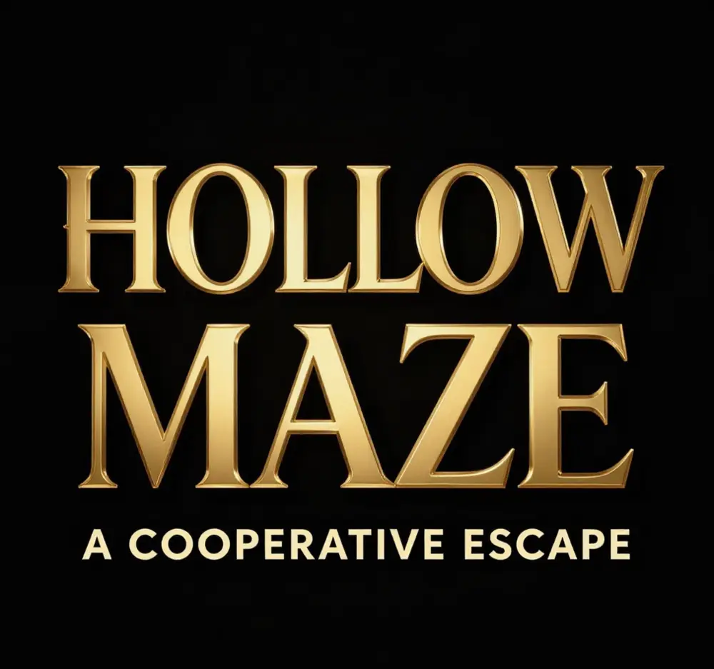

Hollow Maze
A first-person co-op puzzle game where two players can only escape by talking to each other.
- Engine
- Unreal Engine 5
- Players
- Two, online co-op with voice chat
- Team
- Four developers
- My part
- UI, narrative and audio

The idea
Early on we thought it would be cool to make a game where two players have to communicate to solve the puzzles. None of us in the group had tried to build anything like it before.
The quickest way to get networking working in a small team was a VPN tool that let us connect to each other. That also meant we could playtest straight from the editor, without making a build, and test changes as we played.
Two cells, one escape
Each player wakes up in a different jail cell and has to look around for a way out. The players can never reach each other physically, for the whole game.
So you have to talk, describing what you see in your own cell to the other player. Most puzzles are built from colours, symbols, buttons and mirrors.
Light and ciphers
Player 1 gets a narrative prompt to shine their lantern on something nearby, which reveals a hidden message.
On the other side of the wall, player 2 sees a cipher. Together, the two halves tell you the order to interact with things in.
The final puzzle
The last puzzle takes place inside a cube-shaped room that player 2 can rotate.
Player 1 has to work out how to aim a beam of light so it hits every button in the room at least once, while player 2 turns the room around them.